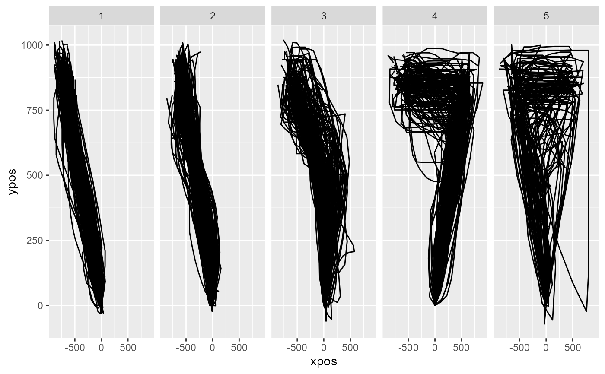

Performs trajectory clustering. It first computes distances between each pair of trajectories and then applies off-the-shelf clustering tools to explain the resulting dissimilarity matrix using a predefined number of clusters.
mt_cluster( data, use = "sp_trajectories", save_as = "clustering", dimensions = c("xpos", "ypos"), n_cluster = 5, method = "hclust", weights = rep(1, length(dimensions)), pointwise = TRUE, minkowski_p = 2, hclust_method = "ward.D", kmeans_nstart = 10, na_rm = FALSE, cluster_output = FALSE, verbose = FALSE )
| data | a mousetrap data object created using one of the mt_import
functions (see mt_example for details). Alternatively, a trajectory
array can be provided directly (in this case |
|---|---|
| use | a character string specifying which trajectory data should be used. |
| save_as | a character string specifying where the resulting data should be stored. |
| dimensions | a character vector specifying which trajectory variables should be used. Can be of length 2 or 3, for two-dimensional or three-dimensional trajectories respectively. |
| n_cluster | an integer specifying the number of clusters to estimate. |
| method | character string specifying the clustering procedure. Either hclust (the default) or kmeans. |
| weights | numeric vector specifying the relative importance of the
variables specified in |
| pointwise | boolean specifying the way in which dissimilarity between
the trajectories is measured. If |
| minkowski_p | an integer specifying the distance metric for the cluster
solution. |
| hclust_method | character string specifying the linkage criterion used.
Passed on to the |
| kmeans_nstart | integer specifying the number of reruns of the kmeans
procedure. Larger numbers minimize the risk of finding local minima. Passed
on to the |
| na_rm | logical specifying whether trajectory points containing NAs should be removed. Removal is done column-wise. That is, if any trajectory has a missing value at, e.g., the 10th recorded position, the 10th position is removed for all trajectories. This is necessary to compute distance between trajectories. |
| cluster_output | logical. If |
| verbose | logical indicating whether function should report its progress. |
A mousetrap data object (see mt_example) with an additional
data.frame added to it (by default called clustering) that
contains the cluster assignments. If a trajectory array was provided
directly as data, only the clustering data.frame will be
returned.
mt_cluster uses off-the-shelf clustering tools, i.e.,
hclust and kmeans, for cluster estimation.
Cluster estimation using hclust relies on distances
computed by mt_distmat.
Mouse trajectories often occur in distinct, qualitative types (see Wulff et
al., in press; Wulff et al., 2018). Common trajectory types are linear
trajectories, mildly and strongly curved trajctories, and single and multiple
change-of-mind trials (see also mt_map). mt_cluster can tease
these types apart.
mt_cluster uses hclust or kmeans to
explain the distances between every pair of trajectories using a predefined
number of clusters. If method is "hclust", mt_cluster computes the
dissimiliarity matrix for all trajectory pairs using mt_distmat. If
method is "kmeans", this is done internally by kmeans.
We recommend setting method to hclust using
ward.D as the linkage criterion (via hclust_method). Relative
to kmeans, the other implemented clustering method, and other
linkage criteria, this setup handles the skewed distribution cluster sizes
and trajectory outliers found in the majority of datasets best.
For clustering trajectories, it is often useful that the endpoints of all trajectories share the same direction, e.g., that all trajectories end in the top-left corner of the coordinate system (mt_remap_symmetric or mt_align can be used to achieve this). Furthermore, it is recommended to use spatialized trajectories (see mt_spatialize; Wulff et al., in press; Haslbeck et al., 2018).
Wulff, D. U., Haslbeck, J. M. B., Kieslich, P. J., Henninger, F., & Schulte-Mecklenbeck, M. (2019). Mouse-tracking: Detecting types in movement trajectories. In M. Schulte-Mecklenbeck, A. Kühberger, & J. G. Johnson (Eds.), A Handbook of Process Tracing Methods (pp. 131-145). New York, NY: Routledge.
Wulff, D. U., Haslbeck, J. M. B., & Schulte-Mecklenbeck, M. (2018). Measuring the (dis-)continuous mind: What movement trajectories reveal about cognition. Manuscript in preparation.
Haslbeck, J. M. B., Wulff, D. U., Kieslich, P. J., Henninger, F., & Schulte-Mecklenbeck, M. (2018). Advanced mouse- and hand-tracking analysis: Detecting and visualizing clusters in movement trajectories. Manuscript in preparation.
mt_distmat for more information about how the distance matrix is computed when the hclust method is used.
mt_cluster_k for estimating the optimal number of clusters.
# Spatialize trajectories KH2017 <- mt_spatialize(KH2017) # Cluster trajectories KH2017 <- mt_cluster(KH2017, use="sp_trajectories") # Plot clustered trajectories mt_plot(KH2017,use="sp_trajectories", use2="clustering",facet_col="cluster")